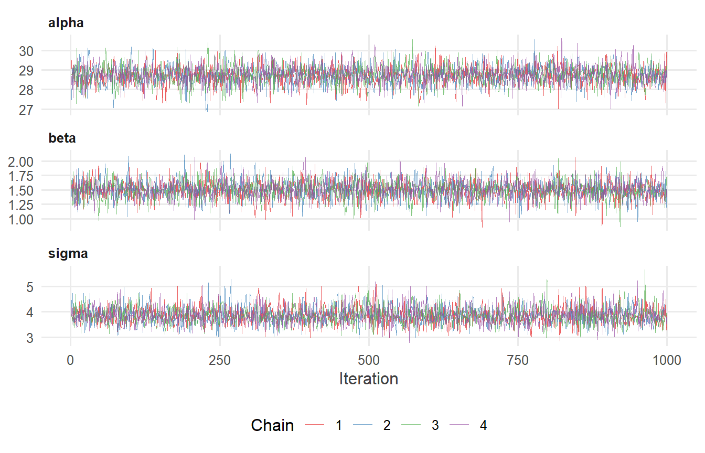
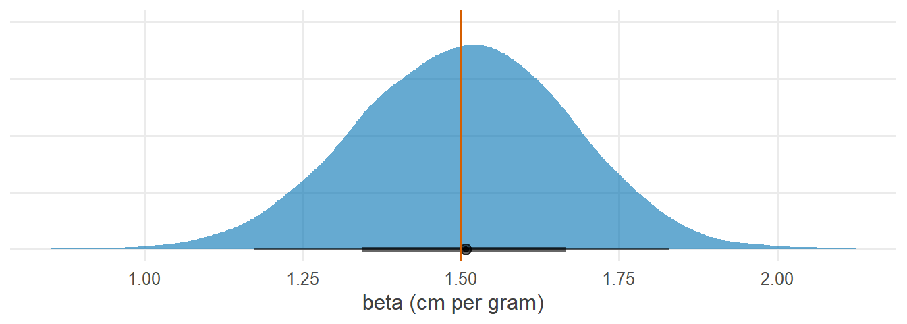
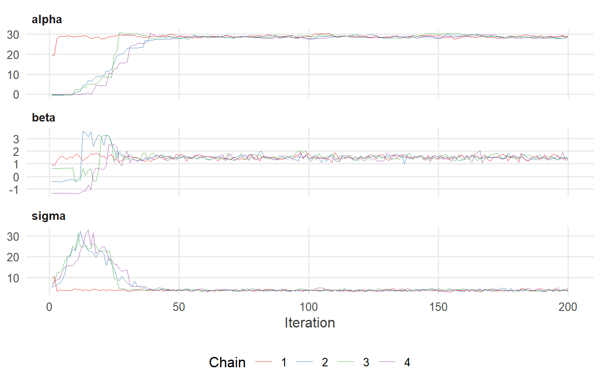
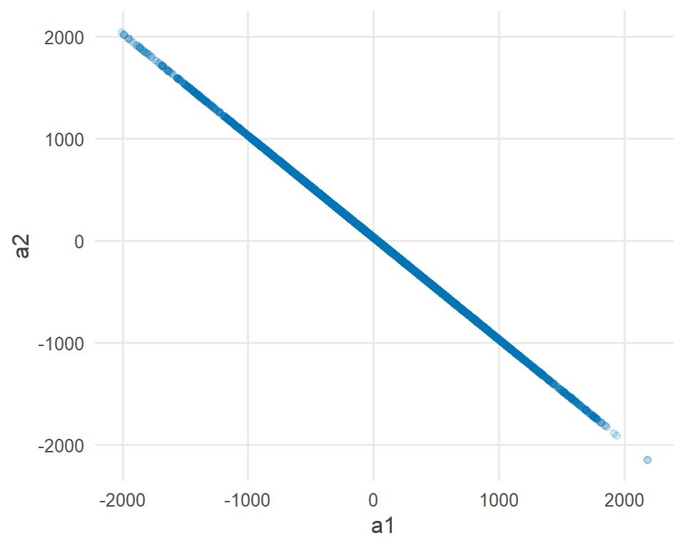

library(tidyverse)
library(cmdstanr)
library(posterior)
library(tidybayes)
source("R/theme.R")
source("R/utils.R")第 6 章 运行、诊断与后验整理
cmdstanr 从编译到采样做了什么；Rhat、ESS、树深与 E-BFMI 在提示什么；怎样用 posterior 和 tidybayes 整理后验。
模型写好之后，还有三件事要做：运行它，检查运行结果是否可信，再把后验抽样整理成能回答研究问题的形式。
这一章是本系列的“工具章”。前面几章已经在用 $sample()、$summary()、spread_draws()，这里把它们系统地讲清楚，并且刻意制造两次“失败”的运行，看诊断指标如何发出警报。
1 本章要回答的问题
- cmdstanr 从编译到采样，每一步在做什么？
- Rhat、ESS、树深、E-BFMI、发散转移分别在提示什么？出问题时该怎么办？
- 拿到 draws 之后，怎样用 posterior 与 tidybayes 整理、汇总和画图？
2 公式卡片
施肥量与植株高度
\[ \begin{aligned} y_i &\sim \operatorname{Normal}(\alpha + \beta\, x_i^{c},\ \sigma), \qquad x_i^{c} = x_i - \bar{x} \\ \alpha &\sim \operatorname{Normal}(30,\ 10) \\ \beta &\sim \operatorname{Normal}(0,\ 5) \\ \sigma &\sim \operatorname{Exponential}(0.2) \end{aligned} \]
模型本身很简单，本章的重点在模型之外。
3 模拟数据
研究情境：60 株植物接受不同剂量的肥料（0–10 克），测量生长期结束时的高度（厘米）。
set.seed(2026)
N <- 60
alpha_true <- 30 # height at the average dose (cm)
beta_true <- 1.5 # height gain per gram (cm)
sigma_true <- 4 # residual SD (cm)
sim_data <- tibble(
dose = runif(N, 0, 10),
height = alpha_true + beta_true * (dose - 5) + rnorm(N, 0, sigma_true)
)
stan_data <- list(
N = nrow(sim_data),
x = sim_data$dose - mean(sim_data$dose),
y = sim_data$height
)4 Stan 代码
// Chapter 6: Linear regression used to practise running and diagnosing
//
// y_i ~ Normal(alpha + beta * x_i, sigma)
data {
int<lower=0> N; // number of plants
vector[N] x; // fertilizer dose (g), centered
vector[N] y; // plant height (cm)
}
parameters {
real alpha; // height at the average dose
real beta; // height gain per gram of fertilizer
real<lower=0> sigma; // residual SD
}
model {
// Priors
target += normal_lpdf(alpha | 30, 10);
target += normal_lpdf(beta | 0, 5);
target += exponential_lpdf(sigma | 0.2);
// Likelihood
target += normal_lpdf(y | alpha + beta * x, sigma);
}
generated quantities {
array[N] real y_rep = normal_rng(alpha + beta * x, sigma);
}5 R 端运行
5.1 第一步：编译
mod_growth <- cmdstan_model("stan/ch06_growth.stan")
mod_growth$exe_file()#> [1] "F:/from-formula-to-stan/stan/ch06_growth.exe"cmdstan_model() 做了两件事：先把 Stan 程序翻译成 C++ 代码，再把 C++ 代码编译成一个可执行文件，放在 .stan 文件旁边。之后只要 .stan 文件没有修改，再次调用 cmdstan_model() 就会直接使用这个可执行文件，不必重新编译。
5.2 第二步：采样
fit_growth <- mod_growth$sample(
data = stan_data,
seed = 2026,
chains = 4,
parallel_chains = 4,
iter_warmup = 1000,
iter_sampling = 1000,
refresh = 0
)#> Running MCMC with 4 parallel chains...
#>
#> Chain 1 finished in 0.1 seconds.
#> Chain 2 finished in 0.1 seconds.
#> Chain 3 finished in 0.1 seconds.
#> Chain 4 finished in 0.1 seconds.
#>
#> All 4 chains finished successfully.
#> Mean chain execution time: 0.1 seconds.
#> Total execution time: 0.3 seconds.$sample() 的常用参数：
| 参数 | 含义 | 默认值 |
|---|---|---|
data |
数据列表，名字与 data 块对应 |
— |
seed |
随机种子，保证结果可复现 | 随机 |
chains |
马尔可夫链的条数 | 4 |
parallel_chains |
同时运行的链数 | 1 |
iter_warmup |
每条链的预热迭代数 | 1000 |
iter_sampling |
每条链保存的抽样数 | 1000 |
adapt_delta |
目标接受率，调高可减少发散（步长变小） | 0.8 |
max_treedepth |
每次迭代允许的最大树深 | 10 |
init |
初值：数值、函数或列表 | 在无约束空间 \((-2, 2)\) 内随机 |
refresh |
每隔多少次迭代打印一次进度，0 表示不打印 | 100 |
预热阶段，采样器一边走一边调整自己：找到合适的步长，并估计各参数的尺度（质量矩阵）。预热阶段的抽样默认不保存，也不用于推断。正式抽样阶段，采样器使用调好的设置，每一步都保存下来。
5.3 第三步：认识拟合对象
fit_growth 是一个 CmdStanMCMC 对象。最常用的方法：
| 方法 | 作用 |
|---|---|
$summary() |
后验汇总与收敛诊断 |
$diagnostic_summary() |
发散、树深、E-BFMI 的汇总 |
$draws() |
取出后验抽样 |
$sampler_diagnostics() |
每次迭代的采样器信息（步长、跳步数、是否发散等） |
$output_files() |
Stan 写出的 CSV 文件路径 |
$save_object() |
把拟合结果保存为 .rds 文件 |
6 后验整理与可视化
6.1 先看诊断，再看结果
拿到拟合结果后的第一件事，不是看参数估计，而是确认这些估计可信。
fit_growth$diagnostic_summary()#> $num_divergent
#> [1] 0 0 0 0
#>
#> $num_max_treedepth
#> [1] 0 0 0 0
#>
#> $ebfmi
#> [1] 0.9380747 1.0386515 1.0204896 1.1896402fit_growth$summary(c("alpha", "beta", "sigma"))#> # A tibble: 3 × 10
#> variable mean median sd mad q5 q95 rhat ess_bulk ess_tail
#> <chr> <dbl> <dbl> <dbl> <dbl> <dbl> <dbl> <dbl> <dbl> <dbl>
#> 1 alpha 28.7 28.7 0.512 0.504 27.9 29.6 1.00 3603. 2557.
#> 2 beta 1.50 1.51 0.169 0.170 1.22 1.78 1.00 3921. 2845.
#> 3 sigma 3.87 3.84 0.364 0.363 3.31 4.50 1.00 3533. 3015.逐项核对：
| 指标 | 本次结果 | 判断标准 |
|---|---|---|
发散转移 num_divergent |
全为 0 | 应为 0 |
达到最大树深 num_max_treedepth |
全为 0 | 应为 0 或极少 |
E-BFMI ebfmi |
都在 1 附近 | 不应低于 0.3 |
rhat |
1.00 | 小于 1.01 |
ess_bulk、ess_tail |
数千 | 每条链至少 100，4 条链合计至少 400 |
全部通过，可以放心使用这些抽样。
6.2 轨迹图
轨迹图把每条链的抽样按迭代顺序画出来。健康的轨迹图应该像“毛毛虫”：几条链相互交织，围绕同一个区域快速上下波动。
fit_growth |>
gather_draws(alpha, beta, sigma) |>
ggplot(aes(x = .iteration, y = .value, colour = factor(.chain))) +
geom_line(linewidth = 0.2, alpha = 0.7) +
facet_wrap(~ .variable, ncol = 1, scales = "free_y") +
scale_colour_brewer(palette = "Set1") +
labs(x = "Iteration", y = NULL, colour = "Chain")
6.3 用 posterior 整理抽样
posterior 宏包提供了几种 draws 格式，适合不同的用途：
draws_arr <- fit_growth$draws(c("alpha", "beta", "sigma")) # draws_array
dim(draws_arr) # iteration x chain x variable#> [1] 1000 4 3draws_df <- as_draws_df(draws_arr) # one row per draw
head(draws_df, 3)#> # A draws_df: 3 iterations, 1 chains, and 3 variables
#> alpha beta sigma
#> 1 29 1.6 3.9
#> 2 29 1.5 3.9
#> 3 29 1.5 3.7
#> # ... hidden reserved variables {'.chain', '.iteration', '.draw'}summarise_draws() 可以自定义汇总量：
draws_arr |>
summarise_draws(
mean, sd,
~ quantile2(.x, probs = c(0.025, 0.975)),
default_convergence_measures()
)#> # A tibble: 3 × 8
#> variable mean sd q2.5 q97.5 rhat ess_bulk ess_tail
#> <chr> <dbl> <dbl> <dbl> <dbl> <dbl> <dbl> <dbl>
#> 1 alpha 28.7 0.512 27.7 29.8 1.00 3603. 2557.
#> 2 beta 1.50 0.169 1.17 1.83 1.00 3921. 2845.
#> 3 sigma 3.87 0.364 3.24 4.63 1.00 3533. 3015.draws_rvars 格式把每个变量变成一个“随机变量”对象，可以像普通数值一样做运算，结果自动保留所有抽样。例如，比较施肥 8 克与 2 克的期望高度：
draws_rv <- as_draws_rvars(draws_arr)
x_bar <- mean(sim_data$dose)
height_8 <- draws_rv$alpha + draws_rv$beta * (8 - x_bar)
height_2 <- draws_rv$alpha + draws_rv$beta * (2 - x_bar)
diff_8_2 <- height_8 - height_2
diff_8_2#> rvar<1000,4>[1] mean ± sd:
#> [1] 9 ± 1Pr(diff_8_2 > 8)#> [1] 0.846diff_8_2 打印出来是“均值 ± 标准差”，背后保存着全部 4000 次抽样。Pr() 直接计算后验概率：施肥 8 克比 2 克平均高出 8 厘米以上的概率。
6.4 用 tidybayes 整理抽样
tidybayes 把抽样整理成整洁数据（每行一次抽样、每列一个变量），便于接入 tidyverse 和 ggplot2。
fit_growth |>
spread_draws(alpha, beta) |>
head(3)#> # A tibble: 3 × 5
#> .chain .iteration .draw alpha beta
#> <int> <int> <int> <dbl> <dbl>
#> 1 1 1 1 29.5 1.59
#> 2 1 2 2 28.6 1.45
#> 3 1 3 3 28.9 1.49fit_growth |>
gather_draws(alpha, beta, sigma) |>
median_qi(.width = c(0.5, 0.95))#> # A tibble: 6 × 7
#> .variable .value .lower .upper .width .point .interval
#> <chr> <dbl> <dbl> <dbl> <dbl> <chr> <chr>
#> 1 alpha 28.7 28.4 29.1 0.5 median qi
#> 2 beta 1.51 1.39 1.62 0.5 median qi
#> 3 sigma 3.84 3.61 4.10 0.5 median qi
#> 4 alpha 28.7 27.7 29.8 0.95 median qi
#> 5 beta 1.51 1.17 1.83 0.95 median qi
#> 6 sigma 3.84 3.24 4.63 0.95 median qimedian_qi() 给出中位数和分位数区间；类似的还有 mean_qi()、median_hdi() 等。对于带下标的变量，spread_draws(y_rep[i]) 会自动把下标拆成一列 i，方便与原始数据合并。
fit_growth |>
spread_draws(beta) |>
ggplot(aes(x = beta)) +
stat_halfeye(fill = f2s_colors[["post"]], alpha = 0.6) +
geom_vline(xintercept = beta_true, colour = f2s_colors[["truth"]], linewidth = 0.8) +
labs(x = "beta (cm per gram)", y = NULL) +
theme(axis.text.y = element_blank())
7 为什么这样写
7.1 为什么要跑多条链？
单条链无法判断自己是否已经“走遍”了后验。多条链从不同的初值出发，如果它们最终都在同一个区域内来回游走、彼此无法区分，我们才有理由相信它们探索的是同一个分布。Rhat 正是在比较链与链之间的差异和链内部的差异。
7.2 失败案例一：预热太短
把预热缩短到只有 10 次迭代：
fit_short <- mod_growth$sample(
data = stan_data, seed = 2026, chains = 4, parallel_chains = 4,
iter_warmup = 10, iter_sampling = 200, refresh = 0
)#> Running MCMC with 4 parallel chains...
#>
#> Chain 1 WARNING: No variance estimation is
#> Chain 1 performed for num_warmup < 20
#> Chain 2 WARNING: No variance estimation is
#> Chain 2 performed for num_warmup < 20
#> Chain 3 WARNING: No variance estimation is
#> Chain 3 performed for num_warmup < 20
#> Chain 4 WARNING: No variance estimation is
#> Chain 4 performed for num_warmup < 20
#> Chain 1 finished in 0.0 seconds.
#> Chain 2 finished in 0.0 seconds.
#> Chain 3 finished in 0.0 seconds.
#> Chain 4 finished in 0.0 seconds.
#>
#> All 4 chains finished successfully.
#> Mean chain execution time: 0.0 seconds.
#> Total execution time: 0.3 seconds.fit_short$summary(c("alpha", "beta", "sigma"))#> # A tibble: 3 × 10
#> variable mean median sd mad q5 q95 rhat ess_bulk ess_tail
#> <chr> <dbl> <dbl> <dbl> <dbl> <dbl> <dbl> <dbl> <dbl> <dbl>
#> 1 alpha 26.2 28.6 7.56 0.656 2.33 29.9 1.13 28.3 42.7
#> 2 beta 1.42 1.49 0.570 0.175 0.610 1.84 1.04 163. 40.7
#> 3 sigma 5.50 3.92 5.07 0.478 3.34 20.1 1.07 36.4 51.3fit_short$diagnostic_summary()#> $num_divergent
#> [1] 0 0 0 0
#>
#> $num_max_treedepth
#> [1] 0 0 0 0
#>
#> $ebfmi
#> [1] 0.33976224 0.09562970 0.06904314 0.14940803这一次，Rhat 超过了 1.01，ESS 只有几十，E-BFMI 也偏低。CmdStan 在运行时其实已经给出了提示：No variance estimation is performed for num_warmup < 20，即预热太短，连参数尺度都没有估计。轨迹图揭示了后果：
fit_short |>
gather_draws(alpha, beta, sigma) |>
ggplot(aes(x = .iteration, y = .value, colour = factor(.chain))) +
geom_line(linewidth = 0.3, alpha = 0.8) +
facet_wrap(~ .variable, ncol = 1, scales = "free_y") +
scale_colour_brewer(palette = "Set1") +
labs(x = "Iteration", y = NULL, colour = "Chain")
10 次预热既不足以让链从初值走到后验的主体区域，也不足以调好步长和参数尺度。这类问题的解决办法很简单：使用足够长的预热（默认的 1000 次对大多数模型已经足够）。
7.3 失败案例二：模型本身有问题
第二个失败案例更值得警惕：采样设置完全正常，但模型写错了。下面的模型中，数据只能告诉我们 \(a_1 + a_2\) 是多少，却无法区分 \(a_1\) 和 \(a_2\) 各是多少：
model {
// Very wide priors: only they keep a1 and a2 from drifting apart
target += normal_lpdf(a1 | 0, 1000);
target += normal_lpdf(a2 | 0, 1000);
target += exponential_lpdf(sigma | 0.2);
target += normal_lpdf(y | a1 + a2, sigma);
}mod_nonid <- cmdstan_model("stan/ch06_nonidentified.stan")
fit_nonid <- mod_nonid$sample(
data = list(N = nrow(sim_data), y = sim_data$height),
seed = 2026, chains = 4, parallel_chains = 4, refresh = 0
)#> Running MCMC with 4 parallel chains...
#>
#> Chain 1 finished in 1.7 seconds.
#> Chain 3 finished in 1.7 seconds.
#> Chain 2 finished in 1.8 seconds.
#> Chain 4 finished in 1.8 seconds.
#>
#> All 4 chains finished successfully.
#> Mean chain execution time: 1.7 seconds.
#> Total execution time: 1.9 seconds.fit_nonid$summary(c("a1", "a2", "sigma"))#> # A tibble: 3 × 10
#> variable mean median sd mad q5 q95 rhat ess_bulk ess_tail
#> <chr> <dbl> <dbl> <dbl> <dbl> <dbl> <dbl> <dbl> <dbl> <dbl>
#> 1 a1 91.6 94.7 724. 729. -1118. 1.29e3 1.05 90.8 201.
#> 2 a2 -62.9 -66.4 724. 728. -1260. 1.15e3 1.05 90.8 201.
#> 3 sigma 5.90 5.85 0.577 0.598 5.02 6.89e0 1.01 172. 390.fit_nonid$diagnostic_summary()#> $num_divergent
#> [1] 0 0 0 0
#>
#> $num_max_treedepth
#> [1] 748 723 738 762
#>
#> $ebfmi
#> [1] 0.9503734 1.0411258 1.1469331 1.0560271大量迭代达到了最大树深，\(a_1\)、\(a_2\) 的 Rhat 偏高、ESS 很低。把两者的抽样画在一起，问题一目了然：
fit_nonid |>
spread_draws(a1, a2) |>
ggplot(aes(x = a1, y = a2)) +
geom_point(alpha = 0.15, colour = f2s_colors[["post"]]) +
labs(x = "a1", y = "a2")
后验是一条细长的脊：沿脊的方向只受极宽的先验约束，可以延伸到几千；垂直于脊的方向则被数据严格限定。采样器为了沿着脊走得足够远，必须走非常多的跳步，于是频繁触及最大树深。
这时调大 max_treedepth 或延长采样只是治标。真正的问题在模型：\(a_1\) 和 \(a_2\) 不可识别。练习 4 会给出正确的写法。
7.4 诊断指标速查
| 指标 | 衡量什么 | 出问题时的含义 | 常见对策 |
|---|---|---|---|
| Rhat | 链间差异与链内差异之比 | 链没有混合，或尚未收敛 | 检查模型；延长预热 |
| ESS（bulk / tail） | 相当于多少个独立抽样 | 自相关强，估计不精确 | 检查参数化；延长采样 |
| 发散转移 | 采样器在高曲率区域“失控” | 后验几何有陷阱，结果可能有偏 | 重新参数化（第 12 章）；提高 adapt_delta |
| 最大树深 | 轨迹需要很长才能走开 | 后验狭长或尺度差异大 | 检查可识别性；中心化或标准化 |
| E-BFMI | 动量重采样能否有效改变能量 | 难以探索后验的尾部 | 重新参数化；更合理的先验 |
一个被称为“统计计算民间定理”（folk theorem of statistical computing）的经验是：当采样遇到困难时，问题往往出在模型上，而不是算法上 (Gelman 等, 2020)。诊断指标的价值，在于提示你回头检查模型。
7.5 为什么默认标准是 Rhat < 1.01、ESS > 400？
早期文献常用 Rhat < 1.1 作为收敛标准。Vehtari 等 (2021) 提出了改进的 Rhat（秩归一化、折叠），并建议使用更严格的 1.01，同时要求 bulk-ESS 和 tail-ESS 都足够大：4 条链时合计至少 400。bulk-ESS 关注分布中心（影响均值、中位数的估计），tail-ESS 关注分布尾部（影响区间端点的估计）。posterior 宏包的 rhat()、ess_bulk()、ess_tail() 实现的正是这些改进版本。
8 常见错误
| 错误做法 | 后果 | 正确做法 |
|---|---|---|
| 只看参数估计，不看诊断 | 可能基于没有收敛的抽样下结论 | 先看 $diagnostic_summary() 和 Rhat、ESS |
| 只跑 1 条链 | 无法计算有意义的 Rhat | 至少 4 条链 |
不设 seed |
结果无法复现 | 每次采样都设置随机种子 |
出现发散就直接调高 adapt_delta 到 0.99 |
可能掩盖模型的几何问题 | 先考虑重新参数化，再调整采样参数 |
达到最大树深就调大 max_treedepth |
运行变慢，根本问题仍在 | 检查可识别性和参数尺度 |
| 把预热阶段的抽样用于推断 | 结果有偏 | 只使用正式抽样（cmdstanr 默认如此） |
9 练习
练习 1 读一份诊断报告
某次运行的结果为：beta 的 Rhat = 1.04，ess_bulk = 85，ess_tail = 60，没有发散，没有达到最大树深。你会怎么判断？下一步做什么？
提示参考答案
Rhat 超过 1.01，ESS 远低于 400，说明链之间尚未充分混合，有效样本太少，beta 的估计和区间都不可靠，不能直接报告。
下一步：(1) 看轨迹图，判断是“还没收敛”（链之间有明显差别或有趋势）还是“收敛了但混合慢”（链交织在一起，但自相关很强）；(2) 前者先检查模型与初值，再延长预热；后者检查参数之间是否有强相关（比如第 5 章中没有中心化的回归），考虑重新参数化；(3) 仅在模型确实没有问题时，才通过增加迭代次数来提高 ESS。
练习 2 看看采样器的“工作量”
用 $sampler_diagnostics() 取出正常运行和预热太短两次运行中每次迭代的步长（stepsize__）和跳步数（n_leapfrog__），比较两者。
提示参考答案
bind_rows(
fit_growth$sampler_diagnostics(format = "df") |> mutate(run = "warmup = 1000"),
fit_short$sampler_diagnostics(format = "df") |> mutate(run = "warmup = 10")
) |>
group_by(run, .chain) |>
summarise(
stepsize = mean(stepsize__),
n_leapfrog = mean(n_leapfrog__),
.groups = "drop"
)#> # A tibble: 8 × 4
#> run .chain stepsize n_leapfrog
#> <chr> <int> <dbl> <dbl>
#> 1 warmup = 10 1 0.116 7.03
#> 2 warmup = 10 2 0.0124 57.9
#> 3 warmup = 10 3 0.0124 59.6
#> 4 warmup = 10 4 0.0124 59.4
#> 5 warmup = 1000 1 0.681 5.28
#> 6 warmup = 1000 2 0.671 5.48
#> 7 warmup = 1000 3 0.713 5.03
#> 8 warmup = 1000 4 0.788 4.93预热充分时，四条链调出的步长相近（约 0.7–0.8），每次迭代只需要五个左右的跳步。预热太短时，步长远远小于这个水平，链与链之间也不一致；步长太小，每次迭代就要走几十个跳步才能移动一段像样的距离。找到合适的步长，正是预热阶段要完成的“自我调整”。
练习 3 用 rvar 回答研究问题
用本章的 draws_rv，计算剂量每增加 1 克带来的高度增量（即 \(\beta\)）大于 1 厘米的后验概率，以及 \(\sigma\) 的 90% 区间。
提示参考答案
Pr(draws_rv$beta > 1)#> [1] 0.99775quantile(draws_rv$sigma, probs = c(0.05, 0.95))#> [1] 3.309871 4.497155rvar 让“对后验做运算”和“对普通数值做运算”看起来一样，而结果始终保留完整的不确定性。
练习 4 修复不可识别的模型
改写 stan/ch06_nonidentified.stan，使模型可以识别，并比较修改前后的诊断结果。
提示参考答案
数据只能告诉我们 \(a_1 + a_2\)。既然如此，就只用一个参数 \(\mu\) 表示它。参考写法保存在 stan/ch06_ex4_identified.stan：
parameters {
real mu; // the only quantity the data can inform
real<lower=0> sigma;
}fit_id <- cmdstan_model("stan/ch06_ex4_identified.stan")$sample(
data = list(N = nrow(sim_data), y = sim_data$height),
seed = 2026, chains = 4, parallel_chains = 4, refresh = 0
)#> Running MCMC with 4 parallel chains...
#>
#> Chain 1 finished in 0.0 seconds.
#> Chain 2 finished in 0.0 seconds.
#> Chain 3 finished in 0.0 seconds.
#> Chain 4 finished in 0.0 seconds.
#>
#> All 4 chains finished successfully.
#> Mean chain execution time: 0.0 seconds.
#> Total execution time: 0.3 seconds.fit_id$summary(c("mu", "sigma"))#> # A tibble: 2 × 10
#> variable mean median sd mad q5 q95 rhat ess_bulk ess_tail
#> <chr> <dbl> <dbl> <dbl> <dbl> <dbl> <dbl> <dbl> <dbl> <dbl>
#> 1 mu 28.7 28.8 0.777 0.763 27.4 30.0 1.00 3075. 2678.
#> 2 sigma 5.87 5.84 0.546 0.535 5.05 6.82 1.00 3761. 2406.fit_id$diagnostic_summary()#> $num_divergent
#> [1] 0 0 0 0
#>
#> $num_max_treedepth
#> [1] 0 0 0 0
#>
#> $ebfmi
#> [1] 1.187678 1.034496 1.075452 1.144193所有诊断指标恢复正常。\(\mu\) 的估计与原模型中 \(a_1 + a_2\) 的后验相同，但采样器的工作轻松得多。如果研究问题确实需要区分两个量，就必须提供能区分它们的数据或有信息的先验。
10 小结
- 运行分三步：
cmdstan_model()编译，$sample()采样，再从拟合对象中取出结果。 - 先看诊断，再看结果：发散为 0、没有达到最大树深、E-BFMI 不低于 0.3、Rhat < 1.01、ESS 足够大。
- 预热太短是采样设置的问题，延长预热即可；参数不可识别是模型的问题，必须改模型。
- posterior 负责汇总与运算（
summarise_draws()、rvar、Pr()），tidybayes 负责把抽样整理成整洁数据并画图（spread_draws()、median_qi()、stat_halfeye()）。
11 延伸
- 下一章：第 7 章 Logistic：只换似然。
- 发散转移是诊断中最重要、也最难理解的一项，第 11 章会专门制造并分析它。
12 参考资料
- 改进的 Rhat 与 bulk/tail ESS 见 Vehtari 等 (2021)。
- 采样器的工作原理与各项诊断的直观解释见 Betancourt (2017)。
- “出现计算问题时先检查模型”的工作流程，见 Gelman 等 (2020)。
- Stan Reference Manual 的 MCMC Sampling 一章介绍了 NUTS、预热调整和诊断量的定义 (Stan Development Team, 2026)。
- 用 ggplot2 画诊断图与后验图的方法，见 Gabry 等 (2019)。
Betancourt, M. (2017). A Conceptual Introduction to Hamiltonian Monte Carlo. https://arxiv.org/abs/1701.02434
Gabry, J., Simpson, D., Vehtari, A., Betancourt, M., & Gelman, A. (2019). Visualization in Bayesian Workflow. Journal of the Royal Statistical Society: Series A (Statistics in Society), 182(2), 389～402. https://doi.org/10.1111/rssa.12378
Gelman, A., Vehtari, A., Simpson, D., Margossian, C. C., Carpenter, B., Yao, Y., Kennedy, L., Gabry, J., Bürkner, P.-C., & Modrák, M. (2020). Bayesian Workflow. https://arxiv.org/abs/2011.01808
Stan Development Team. (2026). Stan Reference Manual (Version 2.40). https://mc-stan.org/docs/reference-manual/
Vehtari, A., Gelman, A., Simpson, D., Carpenter, B., & Bürkner, P.-C. (2021). Rank-Normalization, Folding, and Localization: An Improved \(\widehat{R}\) for Assessing Convergence of MCMC (with Discussion). Bayesian Analysis, 16(2), 667～718. https://doi.org/10.1214/20-BA1221